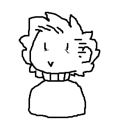

Tarkvara Arendusprotsessi aines tehtud ainemapp kus on selle aine ja kõikide teiste ainete ülesanded ja muud saavutused
| Minu nimi: | Liisi Nurk | Pilt: | |
| Mida ma teen: | Üleväsinud ja alamakstud kunstnik turned tarkvaraarendaja |  |
|
| Kust ma tulen: | Olen Tallinnast pärit | ||
| Minu githubi link | |||